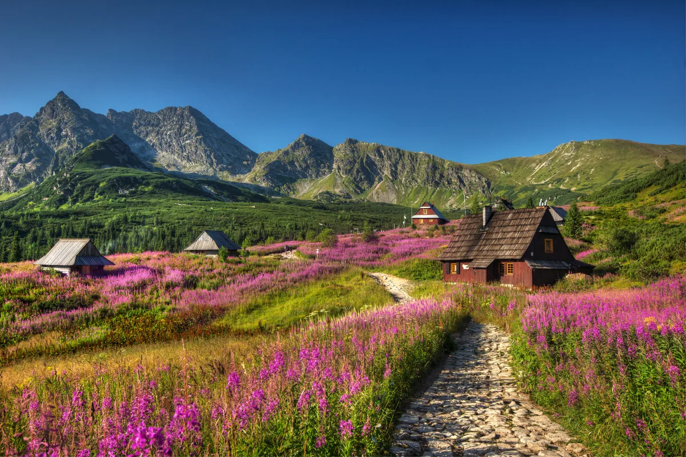
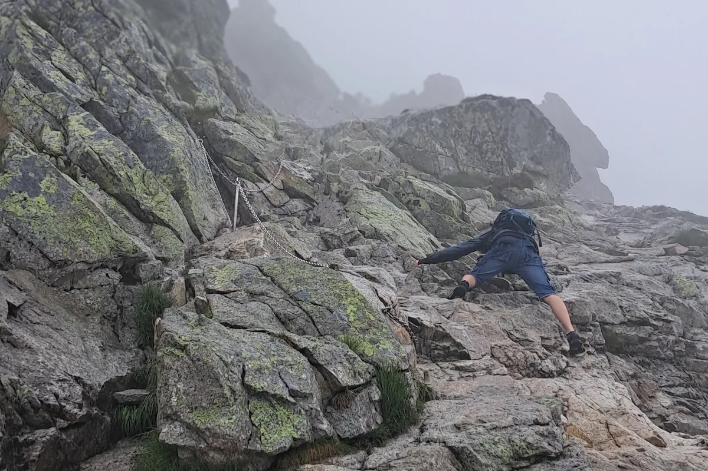
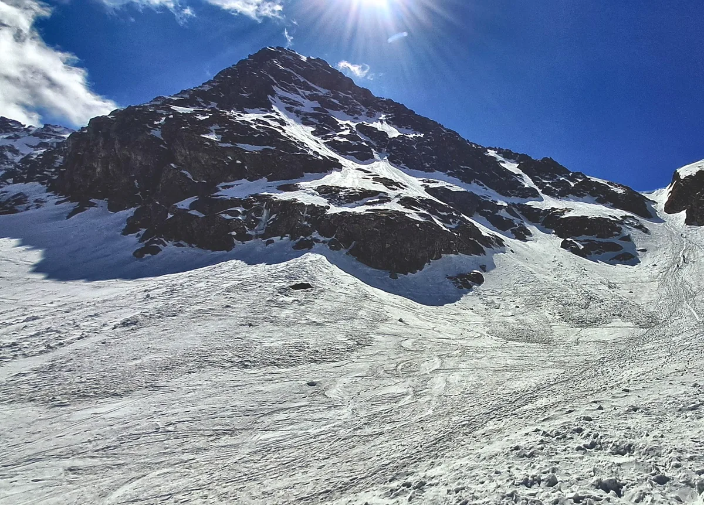
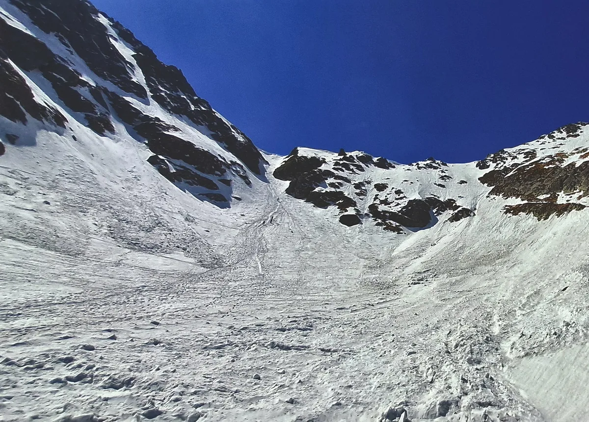

Film o Świnicy jest w przygotowaniu. Po premierze pojawi się w tym miejscu; do tego czasu poprzednie odcinki znajdziesz na kanale W Dobrym Kierunku na YouTube.
Świnica: dwie drogi na szczyt, jedna w dół
Świnica ma 2302 m n.p.m. według pomiaru Uniwersytetu Przyrodniczego we Wrocławiu z 2022 r. (mapa TPN podaje jeszcze 2301 m). Stoi w głównej grani Tatr, na granicy polsko-słowackiej, i jest najwybitniejszym szczytem polskiej części Tatr Wysokich: według listy Kamila Filipowskiego jej wybitność wynosi 351 m. Ma dwa wierzchołki, między którymi jest jedenaście metrów różnicy wysokości; znakowany szlak prowadzi tylko na wyższy.
Na szczyt prowadzą dwa czerwone szlaki: od zachodu ze Świnickiej Przełęczy (2051 m) i od wschodu z Zawratu (2159 m). Od czerwca 2021 r. odcinek Zawrat – Świnica jest jednokierunkowy: wolno nim tylko wejść. Jedyną znakowaną drogą zejścia ze szczytu jest szlak na Świnicką Przełęcz.
Świnicka Przełęcz czy Zawrat — porównanie dróg na szczyt
| Droga | Długość | Podejścia | Czas wg mapy TPN | Kierunek | Ułatwienia |
|---|---|---|---|---|---|
| Świnicka Przełęcz (2051 m) → Świnica | ok. 700 m | blisko 280 m | 1 h | w obie strony; jedyna znakowana droga zejścia | łańcuchy: skalny kominek, trawers Żlebu Blatona, kopuła szczytowa |
| Zawrat (2159 m) → Świnica | nieco ponad 600 m | ok. 200 m | 50 min | tylko w górę (od 1.06.2021) | łańcuchy przez znaczną część trasy, w najtrudniejszych miejscach klamry |
Długości i podejścia policzyliśmy sami z przebiegu szlaków w OpenStreetMap na modelu terenu GUGiK o rozdzielczości 1 m: 686 m i +274 m od przełęczy, 636 m i +208 m od Zawratu. Warstwa szlaków TPN podaje dla odcinka od przełęczy około 707 m. Czasy pochodzą ze schematu szlaków TPN (2023) i nie obejmują przerw ani zejścia.
Dojścia na Świnicką Przełęcz i na Zawrat
To odcinki dojściowe kończące się na przełęczy, a nie całe wycieczki: trzeba do nich doliczyć drogę na szczyt, zejście i powrót. Długości, sumy podejść i zejść oraz czasy pochodzą z planera mapa-turystyczna.pl (odczyty 25.10.2026; wariant przez Boczań 30.10.2026). Czas planera nie gwarantuje rzeczywistego czasu marszu.
| Dojście na Świnicką Przełęcz | Długość | Podejścia | Zejścia | Czas planera | Mapa trasy |
|---|---|---|---|---|---|
| Kasprowy Wierch → Sucha Przełęcz → Liliowe → Świnicka Przełęcz | 2,4 km | +199 m | −135 m | 1:00 h | Mapa trasy |
| Schronisko Murowaniec → Czerwone Stawki → Świnicka Przełęcz (szlak czarny) | 3,6 km | +552 m | −4 m | 2:05 h | Mapa trasy |
| Schronisko Murowaniec → Liliowe → Świnicka Przełęcz | 3,7 km | +595 m | −44 m | 2:10 h | Mapa trasy |
| Kuźnice → Myślenickie Turnie → Kasprowy Wierch → Liliowe → Świnicka Przełęcz | 8,8 km | +1171 m | −155 m | 4:13 h | Mapa trasy |
| Kuźnice → Dolina Jaworzynka → Przełęcz między Kopami → Murowaniec → Świnicka Przełęcz | 8,3 km | +1106 m | −81 m | 4:16 h | Mapa trasy |
| Kuźnice → Boczań → Przełęcz między Kopami → Murowaniec → Świnicka Przełęcz | 8,3 km | +1115 m | −91 m | 4:16 h | Mapa trasy |
| Toporowa Cyrhla → Psia Trawka → Murowaniec → Świnicka Przełęcz | 11,0 km | +1099 m | −57 m | 4:24 h | Mapa trasy |
| Brzeziny → Psia Trawka → Murowaniec → Świnicka Przełęcz | 10,0 km | +1042 m | −10 m | 4:00 h | Mapa trasy |
| Dojście na Zawrat | Długość | Podejścia | Zejścia | Czas planera | Mapa trasy |
|---|---|---|---|---|---|
| Schronisko Murowaniec → Czarny Staw → Zawrat | 4,4 km | +707 m | −46 m | 2:35 h | Mapa trasy |
| Schronisko w Dolinie Pięciu Stawów Polskich → Zawrat | 3,9 km | +528 m | −45 m | 1:52 h | Mapa trasy |
| Kuźnice → Przełęcz między Kopami → Hala Gąsienicowa → Czarny Staw → Zawrat | 8,9 km | +1261 m | −123 m | 4:44 h | Mapa trasy |
Czasy według TPN: Kuźnice → Kasprowy Wierch zielonym szlakiem 3 h (warstwa szlaków TPN); Kasprowy Wierch → Liliowe → Świnicka Przełęcz 1 h; Murowaniec → Świnicka Przełęcz czarnym szlakiem 1 h 35 min; Murowaniec → Czarny Staw → Zawrat 2 h 25 min; schronisko w Dolinie Pięciu Stawów → Zawrat 1 h 50 min (schemat szlaków TPN, 2023; sumy odcinków są nasze). Na tabelach w filmie pokazujemy te same długości i podejścia.
Z Kuźnic przez Kasprowy Wierch
Z Kuźnic najprościej wjechać kolejką na Kasprowy Wierch; górna stacja leży na wysokości 1959 m, 26 m poniżej wierzchołka. Większą satysfakcję daje jednak wejście o własnych siłach: zielonym szlakiem przez Myślenickie Turnie to około 6,1 km i prawie tysiąc metrów w górę — z Kuźnic (ok. 1010 m) na Kasprowy Wierch (1987 m). Warstwa szlaków TPN podaje na to 3 godziny.
To także trasa dawnego testu dla kandydatów do TOPR. Według zarządzenia z czerwca 2020 r. adept musiał pokonać ją z Kuźnic przez Myślenickie Turnie na wierzchołek w czasie krótszym niż godzina plus tyle minut, ile ma lat. Trzy godziny z mapy parku to więc limit 120-letniego kandydata. Dziś test odbywa się zimą, na nartach skiturowych, przez Dolinę Goryczkową, a czas zaliczenia wynosi 1 h 10 min plus wiek.
Z Kasprowego czerwony szlak prowadzi główną granią Tatr przez Beskid, Liliowe i zbocza Skrajnej Turni — omija jej wierzchołek po słowackiej stronie — na Świnicką Przełęcz: 2,4 km, około 200 m podejść i według mapy TPN godzina (Kasprowy – Liliowe 30 min, Liliowe – Świnicka Przełęcz 30 min).
Z Hali Gąsienicowej czarnym szlakiem
Najkrótsze dojście z Hali Gąsienicowej to czarny szlak od schroniska Murowaniec (1500 m): 3,6 km i 552 m podejść według planera, a według schematu TPN 1 h 35 min.
Początek jest spacerowy, wśród kosodrzewiny. Po około 20 minutach dochodzi się do rozdroża przy dolnej stacji wyciągu krzesełkowego. Dalej kamienny chodnik prowadzi brzegiem Zielonego Stawu Gąsienicowego, a następnie przez morenę oddzielającą go od Kurtkowca.
Potem szlak wspina się stromo zakosami, przez rumowisko i skalne płyty. Im wyżej, tym stromiej, a pod samą przełęczą ścieżka robi się wąska i miejscami eksponowana. Łańcuchów na tym odcinku nie ma. W kotlinie pod przełęczą śnieg potrafi leżeć nawet do połowy sierpnia.

Ze Świnickiej Przełęczy na szczyt: kominek i Żleb Blatona
Na Świnickiej Przełęczy spotykają się drogi z zachodu. Stąd do wierzchołka jest około 700 m i blisko 280 m podejść; mapa TPN podaje godzinę.
Kilka minut za przełęczą teren staje się wyraźnie bardziej skalisty. Po wygodnych kamiennych stopniach szybko dochodzi się do pierwszych łańcuchów w stromym skalnym kominku. Nie jest on szczególnie trudny technicznie, ale przy dużym ruchu lub mokrej skale wymaga skupienia. Powyżej szlak prowadzi przez skały i półki skalne, miejscami bardzo blisko stromych stoków opadających do Doliny Walentkowej.
Następnie szlak trawersuje Żleb Blatona — jedno z najbardziej eksponowanych miejsc na trasie, zabezpieczone długimi odcinkami łańcuchów. Przy zejściu trzeba uważać, by we właściwym miejscu skręcić na trawers żlebu. Za żlebem szlak znów stromo pnie się w górę, a ostatnie metry prowadzą przez skalną kopułę, miejscami ubezpieczoną łańcuchami.
Z Zawratu — szlak tylko w górę
Druga droga zaczyna się na Zawracie: 2159 m według drogowskazu TPN na przełęczy (schemat szlaków TPN podaje 2158 m). Ma nieco ponad 600 m długości i około 200 m podejść, a według mapy TPN zajmuje 50 minut. Już od pierwszych metrów to teren wysokogórski.
Szlak najpierw lekko obniża się, a potem wspina dwoma stromymi progami skalnymi. Przez znaczną część trasy towarzyszą łańcuchy, w najtrudniejszych miejscach także klamry. Ekspozycja jest niemal ciągła, a miejscami ścieżka biegnie tuż nad urwistymi stokami opadającymi do Dolinki pod Kołem w Dolinie Pięciu Stawów Polskich.
Najtrudniejszy fragment to około trzydziestometrowe zacięcie skalne między płytami, z łańcuchami i klamrami. Wymaga sprawnego poruszania się w skale i używania rąk. Wyżej trudności nieco maleją, ale aż do szczytu szlak pozostaje eksponowany i prowadzi wśród stromych skał.
Na sam Zawrat prowadzą osobne, wymagające podejścia — z Hali Gąsienicowej przez Czarny Staw albo z Doliny Pięciu Stawów Polskich (tabela wyżej). Opisujemy je dokładniej w artykule o Orlej Perci, która też zaczyna się na Zawracie.

Dlaczego ze Świnicy nie można zejść na Zawrat?
21 maja 2018 r. obryw skalny w południowej ścianie Niebieskiej Turni zniszczył fragment szlaku Zawrat – Świnica. Odcinek przez trzy lata pozostawał zamknięty. Po ponownym otwarciu 1 czerwca 2021 r. TPN wprowadził ruch jednokierunkowy: wyłącznie od Zawratu na Świnicę. Tę zasadę powtarza obowiązujące zarządzenie dyrektora TPN nr 6/2026.
Decyzję podjęto ze względów bezpieczeństwa, zgodnie z rekomendacją naczelnika TOPR. TPN pisał w 2021 r., że właśnie na odcinku między Świnicą a Zawratem odnotowano najwięcej wypadków, i wiązał to prawdopodobnie z łatwym dostępem na Świnicę od Kasprowego Wierchu oraz dużymi trudnościami w zejściu, na które turyści trafiają często zupełnie nieprzygotowani. Opracowanie TOPR o wypadkach śmiertelnych w latach 2010–2019 podaje 22 ofiary na Świnicy, w tym 14 na szlaku ze Świnicy na Zawrat.
Zejście: ze Świnicy schodzi się tylko przez Świnicką Przełęcz. Szlak na Zawrat jest jednokierunkowy — schodzenie nim jest niezgodne z zasadami TPN.
Którą drogę wybrać?
Oba warianty wymagają doświadczenia w eksponowanym terenie, pewnego kroku i koncentracji. Wybierając wejście od Zawratu, zaplanuj od razu zejście przez Świnicką Przełęcz — tak wyglądała moja letnia pętla z 18.07.2025 (ślad GPS niżej).
Świnica zimą
Zimą Świnica staje się zupełnie inną górą. Śnieg i oblodzenie mogą utrzymywać się tu od jesieni aż do początku lata, a letni przebieg szlaku często bywa niewidoczny. Zimą szlaki nie są dodatkowo znakowane ani zabezpieczane.
Przed wyjściem sprawdź komunikat lawinowy TOPR i komunikat turystyczny TPN. Niezbędne są raki, czekan, kask oraz sprzęt lawinowy (detektor, sonda, łopata) wraz z umiejętnością jego używania.
TPN nie wyznacza na tym odcinku wariantu zimowego. Zejście ze szlaku powyżej górnej granicy lasu jest dopuszczalne tylko w razie zagrożenia lawinowego i tylko w najbliższej odległości poprawiającej bezpieczeństwo (zarządzenie nr 6/2026, § 3 ust. 4). Mój zimowy ślad z 2 maja 2026 r., pokazany w filmie (do pobrania niżej), odchodził w Świnickiej Kotlince od letniego szlaku i kończył się na niższym wierzchołku; to zapis jednego dnia, a nie wyznaczona droga zimowa.
Pod Świnicką Przełęczą, w rejonie Świnickiej Kotlinki, schodzą lawiny. Biuletyny zimowe IMGW z sezonu 2025/2026 odnotowały m.in. lawinę „w dolnych partiach Świnicy, w kierunku Kotlinki Świnickiej” (21.03.2026) i lawinę ze Skrajnej Turni w stronę Zielonego Stawu (2–3.04.2026).


Bez doświadczenia zimowego na zimową Świnicę najlepiej wybrać się z licencjonowanym przewodnikiem.
Granica, ratownictwo i ubezpieczenie
Od Świnickiej Przełęczy szlak biegnie granicą polsko-słowacką, a miejscami po słowackiej stronie. Akcje TOPR w Polsce są bezpłatne. Na Słowacji od 1 lipca 2006 r. osoba w terenie górskim ma obowiązek zwrócić koszty akcji ratowniczej lub poszukiwawczej Horskiej záchrannej služby (HZS), a EKUZ tych kosztów nie pokrywa. Sprawdź, czy Twoje ubezpieczenie obejmuje ratownictwo górskie. Źródła: HZS, gov.pl.
Dojazd, kolej na Kasprowy i bilet do TPN
- Kuźnice: nie wjedziesz tam prywatnym samochodem. Busy jeżdżą z przystanków przy rondzie Jana Pawła II (ul. Chałubińskiego 44, al. Przewodników Tatrzańskich); pieszo od ronda to około 40 minut (TPN, PKL).
- Kolej na Kasprowy Wierch: godzinę wjazdu deklaruje się przy zakupie i nie można jej zmienić; Tourpass na zjazd kupisz tylko w kasie górnej stacji, a kasy sprzedają bilety wyłącznie na bieżący dzień. Tourpass zawiera opłatę za wstęp do TPN (z wyjątkiem biletu tylko na zjazd). Kolej ma coroczne przerwy techniczne — w 2026 r. 4–22 maja i 19 października – 6 listopada (PKL).
- Brzeziny i Toporowa Cyrhla: przy początkach szlaków są parkingi i przystanki busów (mapa TPN).
- Bilet wstępu do TPN jest obowiązkowy niezależnie od szlaku; kupisz go w punktach wejścia, online lub przez kod QR (TPN). Od 1 marca do 30 listopada obowiązuje zakaz wchodzenia na szlaki od zmierzchu do świtu, a od grudnia do lutego od 22:00 do 5:00.
Aktualne warunki i zasady TPN
Przed wyjściem zapoznaj się z komunikatem turystycznym TPN (warunki i zamknięcia), zasadami turystyki pieszej, komunikatem lawinowym TOPR i prognozą dla wysokości ponad 2000 m. Model terenu w filmie nie przedstawia aktualnych warunków. Sama mapa ani plik GPX nie potwierdza, że szlak jest otwarty.
Pomoc w górach: TOPR: 601 100 300 lub 985; numer alarmowy: 112.
Narracja odcinka
Poniżej znajduje się pełna narracja odcinka, nagrana przez autora. Rozdziały i znaczniki czasu odpowiadają rozdziałom w opisie filmu na YouTube.
Otwórz pełną narrację: Świnica — pełna narracja
0:00Widok ze Świnicy — Tetmajer
Patrzę ze szczytu w dół: pode mną przepaść rozwarła paszczę ciemną — patrzę w dolinę, w dal: i jakaś dziwna mię pochwyca bez brzegu i bez dna tęsknica, niewysłowiony żal...
To fragment wiersza Kazimierza Przerwy-Tetmajera „Widok ze Świnicy do doliny Wierchcichej”. Na początku jest spokój. Dopiero na końcu autor patrzy w dół i zamiast zachwytu przychodzi tęsknota. I żal. Zanim jednak sami spojrzycie w tę przepaść, musicie poznać zasady, jakie tu panują. Świnica to góra, na którą można wejść dwiema drogami, ale zejść tylko jedną. Skąd taki zakaz? Wyjaśnimy to na szczycie.
0:46Świnica w liczbach, dwa szlaki na szczyt
Zacznijmy od tego, co da się zmierzyć. Świnica 2302 metry n.p.m., stoi w głównej grani Tatr, na granicy polsko-słowackiej i jest najwybitniejszym szczytem polskiej części Tatr Wysokich. Ma dwa wierzchołki, między którymi jest jedenaście metrów różnicy wysokości, ale znakowany szlak prowadzi tylko na ten wyższy. Od zachodu wchodzi się przez Świnicką Przełęcz, a od wschodu przez Zawrat.
1:17Skąd zacząć — drogi na przełęcze
Oba szlaki na szczyt są czerwone. Podejście na Zawrat omówiliśmy szczegółowo w odcinku o Orlej Perci, więc dziś idziemy od zachodu. Na Świnicką Przełęcz można dostać się z Kuźnic, z Toporowej Cyrhli albo z Brzezin. Długości i czasy podajemy w tabelce.
1:37Z Kuźnic przez Kasprowy Wierch
Co prawda z Kuźnic najprościej wjechać kolejką na Kasprowy Wierch, jednak większą satysfakcję daje zdobycie szczytu z podnóży Tatr o własnych siłach. Pieszo, zielonym szlakiem: ponad sześć kilometrów i prawie tysiąc metrów w górę. Tu można zmierzyć się z dawnym testem dla kandydatów do TOPR. Według zasad sprzed kilku lat przyszły ratownik musiał wejść na Kasprowy w czasie poniżej godziny plus tyle minut, ile ma lat. Mapa parku określa czas wejścia na trzy godziny, co sugeruje, że przeciętny turysta spełnia wymagania 120-letniego kandydata. Dziś test odbywa się na innych zasadach. Z Kasprowego idziemy główną granią Tatr przez Beskid, Liliowe i Skrajną Turnię: 2,4 kilometra, 200 metrów podejść i według mapy godzinę.
2:32Z Hali Gąsienicowej czarnym szlakiem
Z Hali Gąsienicowej przez Murowaniec najkrótszy jest czarny szlak: to 3,6 kilometra, 550 metrów podejść i półtorej godziny.
Początek jest spacerowy, wśród kosodrzewiny.
Po dwudziestu minutach dochodzimy do rozdroża przy dolnej stacji wyciągu krzesełkowego. Dalej kamienny chodnik prowadzi wzdłuż brzegów Zielonego Stawu, a następnie przez morenę oddzielającą go od Kurtkowca.
Potem czarny szlak wspina się stromo zakosami, przez rumowisko i skalne płyty.
Im wyżej, tym stromiej, a pod samą przełęczą ścieżka robi się wąska i miejscami eksponowana. Łańcuchów tu jeszcze nie ma. W kotlinie pod przełęczą śnieg potrafi leżeć do połowy sierpnia.
3:22Ze Świnickiej Przełęczy na szczyt
Na Świnickiej Przełęczy spotykają się drogi z zachodu.
Stąd do wierzchołka jest około 700 metrów trasy, a suma podejść wynosi blisko 280 metrów.
Według mapy parku wejście zajmuje około godziny.
Już kilka minut po opuszczeniu przełęczy teren staje się wyraźnie bardziej skalisty.
Początkowo szlak prowadzi po wygodnych kamiennych stopniach, jednak szybko pojawiają się pierwsze ubezpieczenia w postaci łańcuchów zamontowanych w stromym skalnym kominku.
Nie jest on szczególnie trudny technicznie, ale przy dużym ruchu turystycznym lub mokrej skale wymaga skupienia. Powyżej kominka szlak prowadzi przez skały i półki skalne, miejscami bardzo blisko stromych stoków opadających do Doliny Walentkowej.
To właśnie tutaj zaczyna się odczuwalna ekspozycja, a miejscami teren zabezpieczony jest łańcuchami. Następnie trasa dochodzi do słynnego Żlebu Blatona, który trawersuje.
To jedno z najbardziej eksponowanych miejsc na trasie, zabezpieczone długimi odcinkami łańcuchów.
Szczególną ostrożność należy zachować podczas zejścia — trzeba uważać, by we właściwym miejscu skręcić na trawers żlebu. Po przejściu żlebu szlak ponownie kieruje się stromo ku górze.
Ostatnie metry przed szczytem prowadzą przez skalną kopułę, miejscami ubezpieczoną łańcuchami. I jesteśmy na szczycie.
4:50Z Zawratu — szlak jednokierunkowy
Ze szczytu widać Zawrat. Stamtąd prowadzi druga droga, która ma nieco ponad 600 metrów długości i około 200 metrów podejść.
Według mapy parku zajmuje około 50 minut. Już od pierwszych metrów wchodzimy w teren o charakterze wysokogórskim.
Szlak najpierw lekko obniża się, by następnie wspiąć się dwoma stromymi progami skalnymi.
Przez znaczną część trasy towarzyszą nam łańcuchy, a w najtrudniejszych miejscach także klamry.
Ekspozycja jest niemal ciągła, a miejscami ścieżka biegnie tuż nad urwistymi stokami opadającymi do Dolinki pod Kołem, w Dolinie Pięciu Stawów Polskich. Najbardziej wymagającym fragmentem jest około trzydziestometrowe zacięcie skalne pomiędzy płytami.
To stromy odcinek wyposażony w łańcuchy i klamry, który wymaga sprawnego poruszania się w skale oraz używania rąk.
Powyżej trudności nieco maleją, jednak aż do szczytu szlak pozostaje eksponowany i prowadzi wśród stromych skał.
5:56Dlaczego nie zejdziesz na Zawrat
I tu wracamy do pytania z początku: Dlaczego ze Świnicy nie można zejść na Zawrat? W maju 2018 roku potężny obryw skalny w rejonie Niebieskiej Turni zniszczył fragment szlaku, który przez trzy lata pozostawał zamknięty. Po jego ponownym otwarciu w czerwcu 2021 roku wprowadzono ruch jednokierunkowy - wyłącznie z Zawratu na Świnicę. Decyzję podjęto ze względów bezpieczeństwa. To właśnie na odcinku między Świnicą a Zawratem dochodziło do wyjątkowo dużej liczby wypadków, zwłaszcza podczas zejścia ze szczytu. TPN — zgodnie z rekomendacją naczelnika TOPR — wiązał to prawdopodobnie z tym, że wielu turystów docierało na Świnicę stosunkowo łatwą drogą od Kasprowego Wierchu, a następnie mierzyło się z trudnym, eksponowanym zejściem na Zawrat, często nie mając odpowiedniego doświadczenia. Więc schodzimy tam, skąd przyszliśmy: przez Świnicką Przełęcz.
6:59Który wariant wybrać?
Trasa przez Świnicką przełęcz jest nieco dłuższa i wymaga pokonania większej różnicy wysokości, jednak ekspozycja jest mniejsza, a teren mniej wymagający technicznie. Droga przez Zawrat jest krótsza i prowadzi przez mniejsze przewyższenie, ale niemal przez cały czas biegnie w eksponowanym terenie, z licznymi łańcuchami, klamrami i bardziej stromymi odcinkami. Oba warianty wymagają doświadczenia w eksponowanym terenie, pewnego kroku i koncentracji.
7:32Świnica zimą
Zimą Świnica staje się zupełnie inną górą. Śnieg i oblodzenie mogą utrzymywać się tutaj od jesieni aż do początku lata, a letni przebieg szlaku często bywa niewidoczny. Przed wyjściem koniecznie sprawdź komunikat lawinowy TOPR i aktualne warunki w Tatrach. Niezbędne są raki, czekan, kask oraz sprzęt lawinowy wraz z umiejętnością jego używania. Tatrzański Park Narodowy nie wyznacza na tym odcinku wariantu zimowego, a zejście ze szlaku powyżej granicy lasu jest dopuszczalne jedynie w sytuacji zagrożenia lawinowego i tylko w zakresie niezbędnym do poprawy bezpieczeństwa. Pod Świnicką Przełęczą, w rejonie Świnickiej Kotlinki, schodzą lawiny. Jeśli nie masz doświadczenia w turystyce zimowej, na zimową Świnicę najlepiej wybrać się z licencjonowanym przewodnikiem.
8:26Granica i ubezpieczenie
Od Świnickiej Przełęczy szlak biegnie granicą, a miejscami po słowackiej stronie. Akcje TOPR są bezpłatne, ale słowacka HZS może wystawić rachunek, którego EKUZ nie pokryje. Sprawdź, czy twoje ubezpieczenie obejmuje ratownictwo górskie. Dojazd, parkingi, busy i bilety na kolejkę zostawiamy w opisie pod filmem.
8:50Na szczycie
I znów jesteśmy na szczycie. Może właśnie stąd najlepiej widać, jak wiele można zobaczyć — i jak niewiele zatrzymać. A potem trzeba się odwrócić. I zejść.
Moje ślady GPS: lato 18.07.2025 i zima 2.05.2026
Pierwszy plik to zapis rzeczywistej całodniowej pętli z urządzenia Garmin, a nie trasa wygenerowana z mapy: Kuźnice – Przełęcz między Kopami – Murowaniec – Czarny Staw – Zmarzły Staw – Zawrat – Świnica – Świnicka Przełęcz – Czerwone Stawki (szlak czarny) – Murowaniec – Kuźnice, w całości po znakowanych szlakach. 7140 punktów, około 19,7 km według GPS, od 8:03 do 19:39 z przerwami; na Zawracie o 12:51, na szczycie od 14:17 do 15:14, na Świnickiej Przełęczy o 15:52. Publiczna kopia zawiera współrzędne, wysokości i znaczniki czasu; usunąłem z niej pomiary tętna i kadencji, a przebieg i wszystkie punkty pozostały bez zmian. Nie jest to instrukcja nawigacyjna ani gwarancja, że szlak jest dostępny lub bezpieczny.
Drugi plik to zapis zimowego wyjścia z 2 maja 2026 r. na niższy, północno-zachodni wierzchołek Świnicy — nie na wierzchołek główny. Z Zakopanego przez Murowaniec i czarny szlak; w Świnickiej Kotlince, mniej więcej od 10:50 do 12:16, ślad odchodzi od letniego przebiegu szlaku nawet o około 100 m. Na Świnickiej Przełęczy o 12:18, na niższym wierzchołku o 13:49; powrót granią przez Liliowe na Kasprowy Wierch i pieszo zielonym szlakiem do Kuźnic, bo kolej miała wtedy przerwę techniczną. 6810 punktów, około 20,5 km według GPS, od 7:28 do 18:08; tętno i kadencja usunięte. To nie jest wyznaczona droga zimowa: TPN nie ma tu wariantu zimowego, a odejście od szlaku powyżej górnej granicy lasu dopuszcza tylko przy zagrożeniu lawinowym (zarządzenie nr 6/2026, § 3 ust. 4).
Pozostałe linki w tabelach prowadzą do map planera. Nie są plikami GPX i nie przedstawiam ich jako gotowych śladów do pobrania.
FAQ: najczęstsze pytania o Świnicę
Czy można zejść ze Świnicy na Zawrat?
Nie. Od czerwca 2021 r. odcinek Zawrat – Świnica jest jednokierunkowy: ruch odbywa się tylko od Zawratu na Świnicę. Ze szczytu schodzi się przez Świnicką Przełęcz — to jedyna znakowana droga zejścia.
Ile się wchodzi na Świnicę z Kasprowego Wierchu?
Według schematu szlaków TPN: Kasprowy Wierch – Liliowe 30 min, Liliowe – Świnicka Przełęcz 30 min, a z przełęczy na szczyt 1 h. Razem około 2 godzin, bez przerw i bez zejścia.
Czy na Świnicy są łańcuchy?
Tak, na obu szlakach. Od Świnickiej Przełęczy łańcuchy są m.in. w skalnym kominku, na trawersie Żlebu Blatona i na kopule szczytowej. Od Zawratu łańcuchy towarzyszą przez znaczną część trasy, a w najtrudniejszych miejscach są także klamry.
Która droga na Świnicę jest łatwiejsza?
Droga od Świnickiej Przełęczy jest dłuższa (ok. 700 m) i ma większe przewyższenie (blisko 280 m), ale mniejszą ekspozycję. Droga od Zawratu jest krótsza (nieco ponad 600 m, ok. 200 m podejść), lecz niemal cały czas prowadzi w eksponowanym terenie. Obie wymagają doświadczenia, pewnego kroku i koncentracji.
Ile kilometrów jest z Kuźnic na Świnicę?
Z Kuźnic przez Kasprowy Wierch na Świnicką Przełęcz: 8,8 km i 1171 m podejść według planera mapa-turystyczna.pl. Z przełęczy na szczyt jest jeszcze około 700 m i blisko 280 m podejść. Do tego trzeba doliczyć zejście.
Czy na Świnicę można wejść zimą?
Zimą Świnica staje się zupełnie inną górą: śnieg i oblodzenie mogą utrzymywać się od jesieni do początku lata, a letni przebieg szlaku bywa niewidoczny. TPN nie wyznacza tu wariantu zimowego. Potrzebne są raki, czekan, kask i sprzęt lawinowy z umiejętnością użycia oraz aktualny komunikat lawinowy TOPR; bez doświadczenia zimowego — z licencjonowanym przewodnikiem.
Czy szlak na Świnicę przechodzi przez Słowację?
Od Świnickiej Przełęczy szlak biegnie granicą polsko-słowacką, a miejscami po słowackiej stronie. Akcje TOPR w Polsce są bezpłatne, ale słowacka HZS może obciążyć kosztami akcji, a EKUZ ich nie pokrywa. Sprawdź, czy ubezpieczenie obejmuje ratownictwo górskie.
Źródła i daty odczytu
Dojścia — długości, podejścia, zejścia i czasy planera: mapa-turystyczna.pl (odczyty 25.10.2026, wariant przez Boczań 30.10.2026). Czasy TPN: schemat szlaków TPN (14.07.2023, odczyt 23.10.2026) i warstwa szlaków TPN (edycja 3.04.2026, odczyt 26.10.2026). Zasady: zarządzenie nr 6/2026 dyrektora TPN, turystyka piesza w TPN (odczyt 22.10.2026), komunikat TPN o otwarciu szlaku (19.05.2021).
Wysokość Świnicy: kampania pomiarowa UPWr 2022. Wybitność: K. Filipowski, „Lista 150 najwyższych szczytów w Tatrach Polskich” (2013). Obryw z 2018 r.: Kajdas, Gądek, Geographia Polonica 97(2), 2024. Wypadki: TOPR, „Wypadki śmiertelne na terenie działania TOPR w latach 2010–2019”. Test TOPR: zarządzenie TOPR z czerwca 2020, „Jak zostać ratownikiem” (TOPR, 2026). Lawiny: biuletyny zimowe IMGW-PIB, Stacja Badań Śniegu i Lawin na Hali Gąsienicowej (2025/2026). Opis czarnego szlaku: tatry.info.pl, e-gory.com, Wikipedia (Kurtkowiec, Świnicka Przełęcz). Kolej i dojazd: TPN, regulamin PKL, przeglądy techniczne PKL (odczyty 23.10.2026).
Wizualizacje 3D i dane wykorzystane w filmie
Wizualizacje 3D: autorski render wykonany w Unreal Engine 5. Autorstwo renderu dotyczy opracowania sceny i wizualizacji; dane wysokościowe oraz obrazy terenu pochodzą od wskazanych dostawców. Model nie przedstawia aktualnych warunków na szlaku.
Teren i ortofotomapa Polski: GUGiK. Teren Słowacji: ÚGKK SR (DMR 5.0); słowacka ortofotomozaika: ÚGKK SR, GKÚ Bratislava, NLC (ZBGIS). Teren poza Polską uzupełnia Copernicus WorldDEM-30: produced using Copernicus WorldDEM-30 © DLR e.V. 2010-2014 and © Airbus Defence and Space GmbH 2014-2018 provided under COPERNICUS by the European Union and ESA; all rights reserved.
Dalekie tło filmu: Sentinel-2 cloudless — s2maps.eu by EOX IT Services GmbH (Contains modified Copernicus Sentinel data 2016). Śnieg w scenie zimowej: contains modified Copernicus Sentinel data 2026. Szlaki: © współtwórcy OpenStreetMap (ODbL), dane z 14.09.2026, oraz warstwa szlaków TPN.
Zdjęcia, wiersz i muzyka
Zdjęcia autora kanału: łańcuchy na szlaku z Zawratu (18.07.2025), Świnica i Świnicka Kotlinka zimą (2.05.2026); w filmie także nagrania autora z 2.05.2026. Hala Gąsienicowa: fot. Aneta Pawska, CC BY 3.0, plik w Wikimedia Commons — na tej stronie zmniejszone, w filmie kadr. Miniatura filmu i obraz podglądu tej strony: zdjęcie autora kanału (20.09.2026), grafika wspinacza: Vecteezy.com.
Wiersz w filmie: Kazimierz Przerwa-Tetmajer, „Z Tatr. Widok ze Świnicy do doliny Wierchcichej” (domena publiczna, Wikisource).
Muzyka w filmie: „Sorrow” — Neutrin05, „Like a Dream” — GalaxyTones, „Compass Rose” — BlauDisS; licencja Creative Commons — Attribution 3.0 Unported (CC BY 3.0); Music promoted by Audio Library.